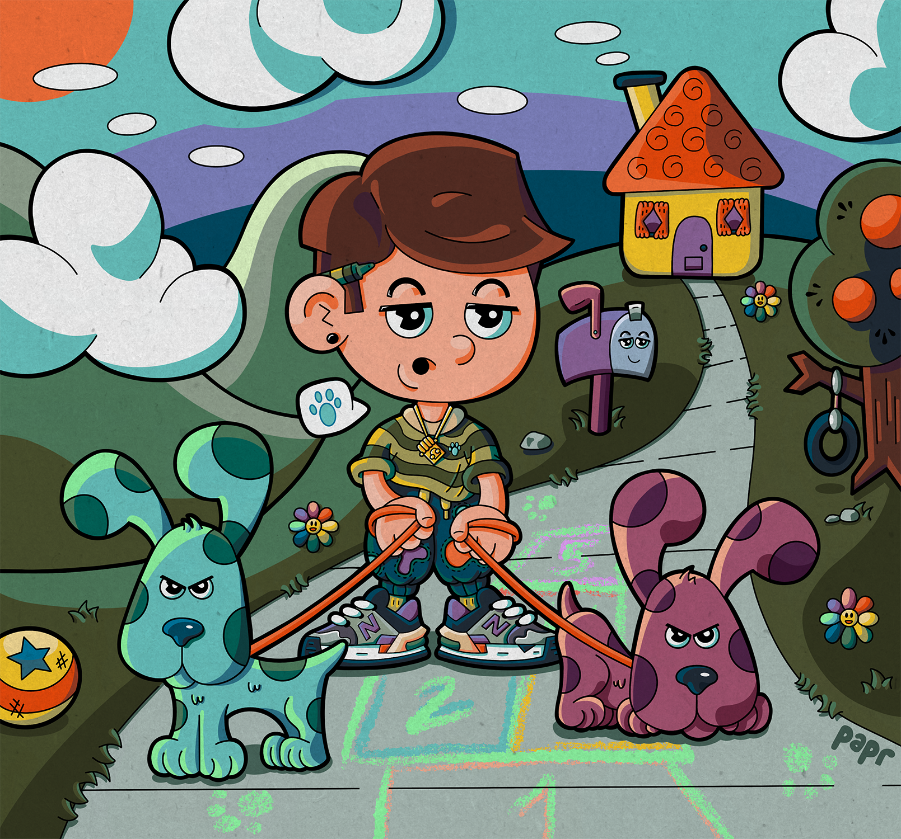

Artist
My name is Kira Banks. I'm a graphic designer and freelance artist living in Elmira, New York. I work primarily under the username papr, which essentially came from the idea of drawing on paper, and then later turned into a joke about money because my last name is Banks.
In 2011 I attended SUNY Fredonia studying visual arts & new media, concentrating mostly in graphic design and web design. In 2015 I moved to Newark, New Jersey, and worked various jobs while still doing freelance design projects and participating in galleries to showcase some of my original art in NYC. Since 2022 I have started a tech degree in web development, and intend to use it as another creative tool in my career. As for my art, I continue to push new skills into my work and believe programming will go hand in hand with whatever future projects I do.
My primary discipline is design & digital illustration, mainly using Procreate or Adobe Photoshop. I'm a big fan of cartoons and video games. Nostalgia, specifically from the 90s, fuels many of my ideas and a lot of that reflects in my work and style.
I want to increase my skills and knowledge in:
I’d like to create my own animations and games.
